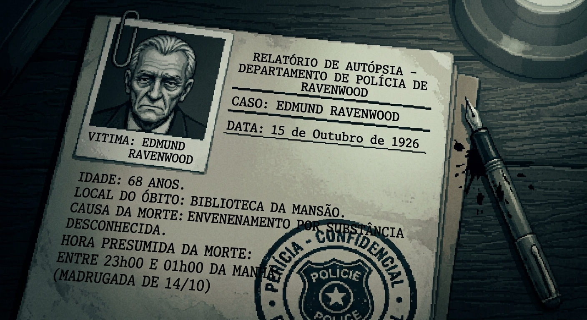

14 DE OUTUBRO DE 1926
RAVENWOOD
Londres.
Uma noite fria e chuvosa.
Naquela noite,
Edmund Ravenwood
estava em sua biblioteca.
Algumas horas depois...
algo terrível aconteceria.
THE POIROT GAZETTE
LONDRES — 15 DE OUTUBRO DE 1926
MORTE MISTERIOSA
NA MANSÃO RAVENWOOD
Homem rico é encontrado morto em sua biblioteca
Edmund Ravenwood, proprietário da famosa Mansão Ravenwood, foi encontrado morto em sua biblioteca na manhã desta quinta-feira.
Segundo os primeiros exames realizados, a causa da morte teria sido envenenamento.
Os médicos ainda não conseguiram determinar o horário exato da morte.
Quatro pessoas estavam presentes na mansão durante a noite.
A POLÍCIA ACREDITA QUE O RESPONSÁVEL AINDA ESTEJA DENTRO DA MANSÃO.
"A verdade permanece um mistério."
O RELÓGIO DA BIBLIOTECA
Ele parou exatamente nesse horário.
UM MISTÉRIO. QUATRO SUSPEITOS.
O CASO DE
RAVENWOOD
A verdade está escondida entre as pistas.
